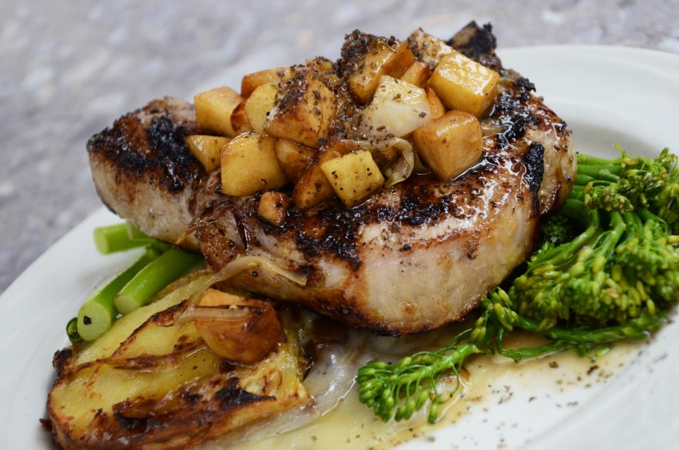

火を、ともす。
珈琲茶屋 nano
千葉県柏市、柏駅から歩ける距離のアーケード沿いに、昭和レトロな純喫茶がひとつ。
コーヒーは一杯ずつ、サイフォンで淹れています。
店構え
お湯が、静かに上がってくる。
珈琲茶屋 nano は、千葉県柏市柏1丁目、アーケード沿いの「ファミリかしわ」1階にあります。
カウンター席とテーブル席があり、おひとりでのご利用はカウンター席をご案内しています。
昭和レトロな内装が今も残る店内には、常連のお客様の姿も多く見られます。
店内
抽出のひととき
一杯分だけ、満ちてゆく。
珈琲茶屋 nano のコーヒーは、注文を受けてから一杯ずつサイフォンで抽出しています。
ガラス器具の中でお湯が上がり、蒸らされ、また落ちてくる。
その数分間だけ、カウンターの前に小さな時間が生まれます。
メニューの詳細や取り扱い豆については、Instagramにてご確認ください。
煙とコーヒーの、境目で。
珈琲茶屋 nano は、全席喫煙可能な喫茶店です。
紫煙とともにゆっくり過ごされる常連のお客様が多く、カウンター越しに会話が生まれることもあります。
一方で、煙草の香りが苦手な方もいらっしゃるかと思います。
店内は終始喫煙可能な環境であることを、あらかじめご了承のうえご来店いただけますと幸いです。
今日も、一杯分だけ。
珈琲茶屋 nano は、柏駅から歩ける距離、アーケード沿いの「ファミリかしわ」1階にあります。
〒277-0005 千葉県柏市柏1丁目1-11 ファミリかしわ 1階PHOTO SAMPLE(フリー素材によるイメージ写真)
